⌕CAREER / AI

A job-discovery web application with resume upload and ATS-related checking. Built with a Python application layer, API integrations, backend services, and database storage.
PERSONAL DEVELOPER ARCHIVE
A record of the software I build, the problems I explore, and the ideas I turn into working projects.
01 — SELECTED WORK

Projects, prototypes, and products in development. Their status is shown clearly.

A job-discovery web application with resume upload and ATS-related checking. Built with a Python application layer, API integrations, backend services, and database storage.

A news, blog, and technology publishing platform with administrator, editor, and visitor roles, theme options, content publishing, and reader-engagement features.

An Android prototype exploring Bluetooth bridging and authenticated local communication, packaged using an Android Gradle build workflow.

An offline English-learning assistant being developed around a locally run AI model, designed to support vocabulary, explanations, and guided language practice.

A student-focused reminder platform for registrations, assignments, and academic deadlines, with calendar views, completion tracking, and notification workflows.

“Technology That Detects, Connects, and Cares.” A healthcare initiative focused on improving access and coordination for rural communities and older adults.
SEVEN SKILLS. ONE WORKING TOOLKIT.
02 — MY TOOLKIT
Seven programming tools, arranged as an interactive keyboard. Select a key to see how it fits into my work.
03 — THE BUILD LOG
Projects, experiments, and milestones. Scroll down to move through the log — scroll back up to rewind it.
Worked on a publishing platform and explored page structure, content workflows, roles, and interface design.
Connected a Python application with APIs, resume workflows, backend services, and databases.
Explored Android builds, Bluetooth communication, and an authenticated local bridge prototype.
Developing an offline English-learning assistant using a locally run model.
Developing ideas around accessible healthcare technology and academic deadline management.
THE LOG KEEPS GROWING — MORE BUILDS, MORE ITERATIONS.
04 — CONTACT
Open to learning, collaboration, and building useful things.